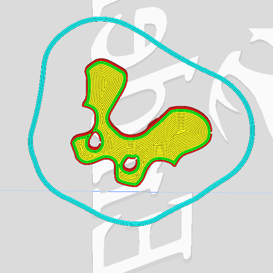

Assignment: Create a final project incorporating 4+ techniques from class!
For my final assignment, I made the two-sided tactile toy box proposed in A7. The box is laser-cut with an integrated hinge. On one side is a skeleton puzzle game, where you press fit 3D-printed bone puzzle pieces into their proper positions. 3D-printed split rivets on the backs of the bones fit into holes in the box and click the pieces into place.
On the opposite outer face of the box is an organ puzzle game, where you place squishy organ puzzle pieces into the proper cavities.
Designing a good mechanism for clicking the puzzle pieces into place was a major factor. On Prof. Nadya's suggestion, I started looking into split rivet designs.
Source (right): P and H Metal
I wanted a mechanism that could (1) insert into a round hole without too much effort, especially when difficult to see, being on the underside of the puzzle piece, (2) click into place, holding the piece into the wood if the box were to be turned upside down, (3) be easily removed by fingers. I tried several iterarions of a 3D split rivet design:
| Name | Silhouette | Diam of peg | Flush v Washer | Split depth | Split width |
|---|---|---|---|---|---|
| A1 | Classic split rivet | Big (10 mm) | Flush | To bottom of wood | To 1mm leg |
| A2 | Classic split rivet | Small (6 mm) | Washer | To bottom of wood | Less V like and more U-like |
| A3 | Click curve | Small (6 mm) | Washer | To bottom of wood | Thinner U |
| A4 | Click curve | Small (6 mm) | Washer | To top of wood | Thinner U |
| A5 | Click curve | Smaller (5.5mm) | Taller washer | To top of wood | Thinner U |
| A6 | Click curve | Smaller (5.7mm) | Taller washer | To top of wood | Thinner U |
In the end, I realized that TINY bumps on the exterior of the rivet were enough to provide a solid click:
The longevity of this mechanism is yet to be tested, but in the short term it really does the trick!
I used the Curve tool in Illustrator to manually trace over a referance image of a skeleton (Source: Wikimedia). This was a somewhat laborious step but allowed me to break the skeleton into puzzleable chunks that could conceal rivets on the back.
I used Rhino to place the rivets and extrude the bone shapes.
The bones were printed, rivet side up, in PLA on an Ender in Dynamic Quality. In Cura, I set the bottom most layer to be a concentric pattern, because I found that most appealing for the top face of the skeleton.
I had time to go for my stretch goal: a second puzzle game with squishy organs.
I tried to construct the organs out of materials that would feel distinct to the touch:
The most involved organ design was the silicone brain. I started with a brain model on Thingi10K:

In Rhino, I cut off the back of the brain so it had a flat side, squashed the remainder to be a 2.5D version of a brain, then cut out the shape of the brain cavity I had already designed. Then, I created a mold to 3D print and pour silicone into:


Integrated hinge box design courtesy of the parametric design tool boxes.py. My only modification was elongating the finger joints for a double-thick bottom layer, for the torso/organ cavities.
Print settings: 100 Power, 5 Speed, Repeat Job Outline 3-4 times